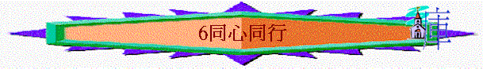

引言:
～分享最近預備婚禮的情況
～在預備過程中，有沒有一些衝突事情發生？ 但彼此之間會否有一些事情是很同心的？
1.同心的榜樣──百基拉和亞居拉
a.百基拉與亞居拉是誰？（徒18:1-4,18）誰是男性，誰是女性？
b.在新約聖經多不多將兩夫婦的名字放在一齊？為何要有如此寫法？想表明他們甚麼？
c.他們在甚麼事情上同心？
(徒18:1-4,18,羅16:3-5) 若在這些事情上不同心會有什麼後果？
d.羅16:3的寫法又有甚麼特別的地方？可表達他們有甚麼地方值得我們效法？
2.實際的應用
a.試分別寫下以下內容
|
類別 |
例子 |
共同的期望 |
仍未達共識的事情 |
|
教會生活 |
例如:是否共同返一間教會、團契……? |
|
|
|
事奉生活 |
例如:有否共同的事奉群體/目標……? |
|
|
|
追求生活 |
例如:有否共同的追求目標/計劃……? |
|
|
|
祈禱生活 |
例如:家庭崇拜／祈禱時間？
一同參加祈禱會？共同祈禱的內容……? |
|
|
|
作息生活 |
例如:共同運動計劃?
幾時睡覺……? |
|
|
|
金錢管理 |
例如:誰管錢?
奉獻分配？
家用？
儲蓄計劃……? |
|
|
|
其他 |
工作目標?
讀書進修計劃…… |
|
|
b.試一同分享以上的內容
c.有哪一項是彼此最同心的？
d.有哪一項是仍未能達共識？若長期仍不能達共識，你們會怎樣？ 如何解決？
3.同心的關鍵
a.腓2:1-2保羅期望肢體們在那些事情上同心？
b.腓2:3-8中，最多是什麼字眼？ 己／自己 你認為同心最大的難阻是什麼？ 要同心最好的方法又是什麼？
總結
在6堂的婚前輔導中，對你有什麼提醒及立志？
如果要為你日後的婚姻生活而祈禱，你會求什麼？
祈禱